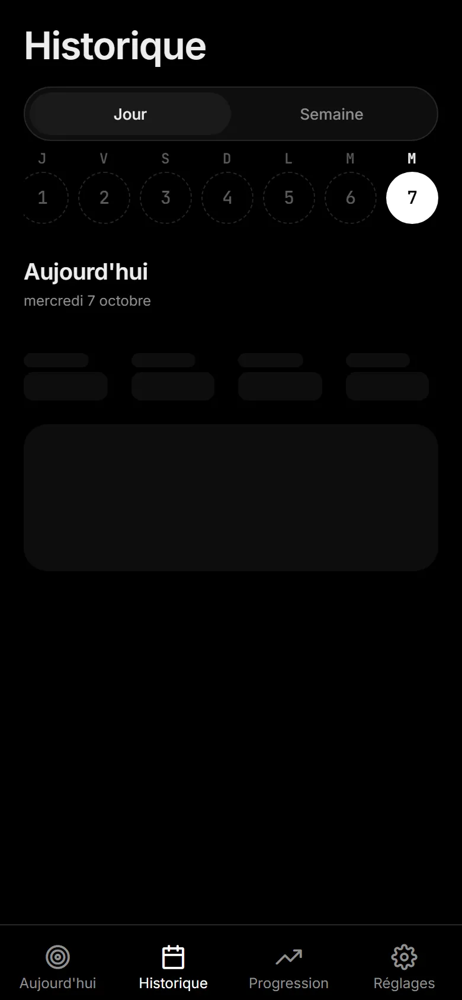

Projets2026
SubForge
Un prototype de coach nutrition : on décrit un repas en une phrase, l'IA propose les macros, on valide.
- Cadre
- Projet personnel, prototype
- Où
- Application mobile
- Période
- Août 2026
- Équipe
- Seul
- Mon rôle
- Produit, design, développement
Code privé. Captures de l’application telle qu’elle tourne.


En bref
- Le problème
- Noter ses repas prend trop de temps, alors on abandonne au bout d’une semaine.
- Ma part
- Tout, seul : un prototype mobile où l’on décrit un repas en une phrase et où l’IA propose les macros.
- Le résultat
- Un prototype qui tourne sur Android, et une vraie première expérience de Supabase et d’un LLM.
Le contexte
Je reprenais la musculation avec un objectif de prise de masse, et je savais déjà où j'allais lâcher : l'alimentation. Chaque fois que j'avais essayé de suivre mes repas, j'avais abandonné au bout d'une semaine, parce que la saisie était trop lente.
Le problème
Noter un repas devait prendre moins de temps que de le manger.
Et je voulais découvrir Supabase et l'intégration d'un LLM sur un vrai cas, pas sur un tutoriel.
Ce que j’ai construit



Une phrase, des macros
On décrit son repas à la voix ou au texte. L'IA propose les aliments et les macros, la personne corrige si besoin, et rien n'est enregistré sans sa validation.
Cinq questions pour commencer
Objectif, morphologie, activité : l’accueil tient en cinq questions.
Ce qui ne se négocie pas
Halal, végétarien, allergies : des contraintes qu’on règle une fois, à part des simples préférences.
L’historique
Les repas de la journée et de la semaine.
Les décisions techniques
- Le back-end le plus simple
- Supabase et ses Edge Functions, pour tester l’idée vite et voir comment les deux se branchent.
- Gemini 2.5 Flash
- Choisi parce que son API était gratuite à ce moment-là. Les appels passent par une Edge Function, pour que la clé reste côté serveur.
- L'IA propose, la personne valide
- Le modèle ne fait que proposer. C'est la personne qui valide ce qui est enregistré.
Téléphone
- React Native + Expo
- Voix ou texte
- Validation par la personne
Edge Functions
- Supabase
- Appel au modèle
IA
- Gemini 2.5 Flash
- Propose les macros
Données
- Supabase Postgres
- Auth
Le résultat
Un prototype qui tourne : builds APK et AAB avec EAS, tests Jest, suivi avec Sentry et PostHog. Je l'ai construit pour apprendre, et je le teste sur mes propres repas.
Ce que j’en retiens
Un projet perso me sert à apprendre une stack : je prends l'outil qui me permet de tester l'idée vite et à moindre coût.
Stack
- React Native
- Expo
- TypeScript
- Supabase
- Edge Functions
- Gemini 2.5 Flash
- Jest
- Sentry
- PostHog
- EAS